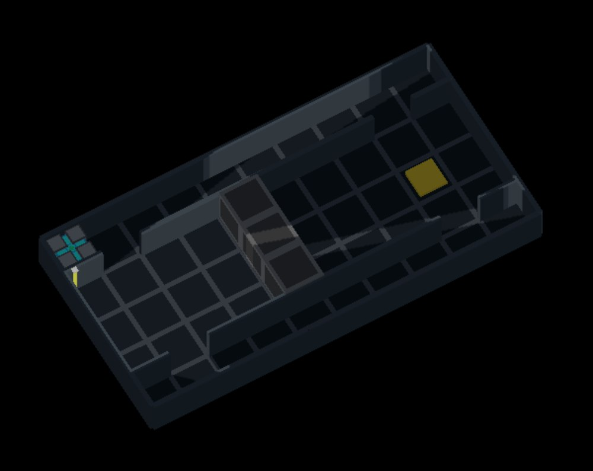
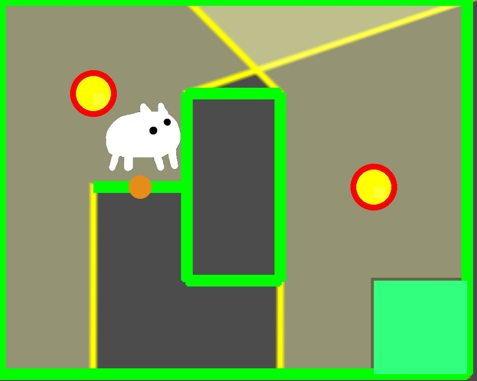
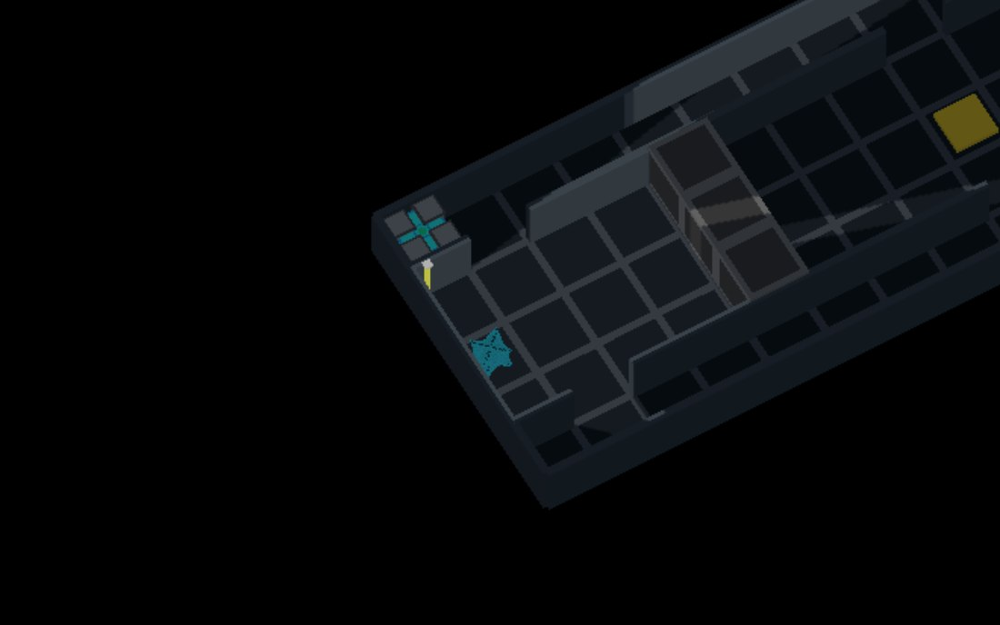

Currently ongoing
Lightpath (Lumena)
A turn-based grid puzzle game where light is the rule: it decides what you can see, what is safe, and what the machines do.
This page is about how the project grew, not what it has.
How it is built
The rules live on a flat grid and the 3D view only reads them, so a richer picture can never change what a move does, and every rule can be tested without drawing a frame.
Five Codemap snapshots
I built a Codemap of the code at five commits across the year. The layers came apart one at a time.
V1Oct 2025
The player’s position is where it is drawn
V2Feb 2026
Rules and drawing still in one place
V3May 2026
Lighting split from drawing
V4Aug 2026
The view only reads; 2D still the default
V5Oct 2026
3D on by default; dead code archived
| Lighting | 1 backend · 372 lines | 1 · 813 lines | 3 backends · 4,378 | 3 · 4,883 | 1 in production · 5,259 |
|---|---|---|---|---|---|
| Undo | Reload the scene | Full snapshots, up to 200 | + undo lock | State before and after each turn | Same |
| Level loading | Line-by-line regex | Lexer → parser → loader | Can write levels back | Syntax tree, validation, editor | Same |
| Tests | 0 | 27 | 74 | ~145 | 172 |
Not every line went the right way: the main lighting file kept growing, and only V5 cut three lighting backends down to one production path.
Levels over a year
Every level file at each snapshot. Some levels exist only to pin down a fixed bug; those are the regression levels.

